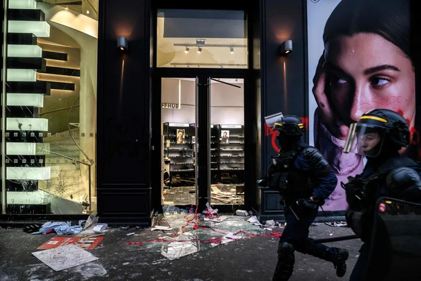

셀린느·디올 매장 싹 털렸다…약탈로 번진 프랑스 시위 : 네이트 뉴스

18일(현지시간) AFP통신 등 외신에 따르면 전날 파리와 마르세유, 리옹, 보르도, 릴 등 프랑스 전역 1750여 곳에서 대규모 시위가 열렸다.
프랑스 내무부는 참가자를 55만명으로 추산했으며, 주최 측인 노동총연맹(CGT)은 80만명이 참여했다고 밝혔다.
파리에서는 라파예트 백화점과 셀린느·디올 등 명품 매장, 휴대전화 매장과 수퍼마켓 등이 약탈 피해를 입었다.
일부 시위대는 매장 유리창과 출입문을 부수고 내부로 들어가 상품을 가져갔다.
방돔 광장과 샹젤리제 거리 등에서는 복면을 쓴 시위대가 경찰에 돌과 폭죽을 던졌고,
경찰은 최루가스와 물대포를 동원해 진압에 나섰다.
차량에 불이 붙는 등 도심 곳곳에서 혼란이 이어졌다.
폭력 사태는 지방 도시로도 번졌다.
남서부 리모주에서는 시위대의 방화로 시청 건물에 불이 나 종탑이 무너졌다.
리옹에서는 관광안내소가 불탔고, 마르세유에서는 상점과 경찰서가 파손되고 시위대가 시청에 난입하는 일도 벌어졌다.
내년 4~5월 대통령 선거를 앞두고 정치권의 공방도 거세지고 있다.
극우 성향의 마린 르펜 국민연합(RN) 의원은 폭력 시위의 책임을 극좌 세력에 돌리며 장뤼크 멜랑숑 굴복하지않는프랑스(LFI) 대표를 비판했다.
멜랑숑 대표는 약탈은 자신들의 방식이 아니라며 시위 참가자들에게 약탈 행위를 자제하라고 촉구했다.
미국에서도 이번 사태를 둘러싼 논쟁이 이어졌다.
JD 밴스 미국 부통령은 엑스(X)에 프랑스의 폭력 사태를 이민정책과 연결 지으며 유럽의 진보 진영을 비판했다.
고물가에서 비롯된 시위가 약탈과 방화로 번진 가운데, 대선을 앞둔 프랑스의 정치적 갈등도 한층 깊어지고 있다.
이래놓고 아무일 없단듯이 일상생활하고 매번 시위떄마다 약탈하면
그냥 약탈하고싶어서 시위하는거랑 뭐가다름? 제살파먹기인데;